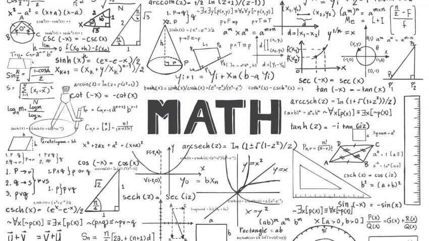
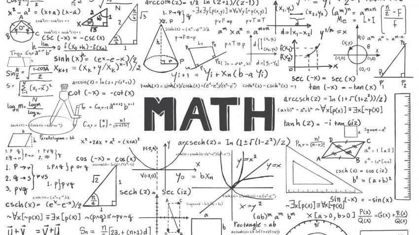

"When tempted to fight fire with fire, remember that the fire department usually uses water."
Things I like
I like to play games like Halo and Osu! and as you can tell from the beginning I also like puzzles. I also like to listen to music specifically electro, video game, and classical music.
I am more of an introvert, but im really comfortable talking around friends.


I like to look at memes, watch anime and fold origami. I also like science and math in school which, sadly, is one of the most boring subjects to other students.

 

There is one thing that I really like to do which is to make small encyclopedias of practically anything from video games to the real world. You can see some of things my friends and I do. These Google Slides are at most about 350 sldies long.
*Most of these are either outdated or unfinishedAnother thing that I like to is to draw. Even though I'm not a really good at drawing is still like to do it.